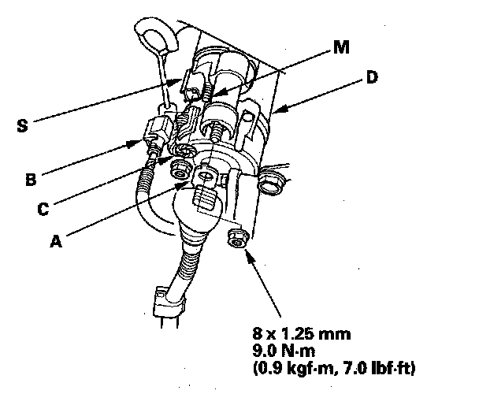

Starter Solenoid: Testing and Inspection
Starter Solenoid Test1. Make sure you have the anti-theft codes for the audio system and navigation system (if equipped). Make sure the ignition switch is OFF.
2. Remove the battery and battery base.
3. Disconnect the negative cable from the battery first, then disconnect the positive cable.

4. Disconnect the positive starter cable (A), S terminal connector (B), and motor cable (C).
5. Check the hold-in coil for continuity between the S terminal and the armature housing (ground) (D). There should be continuity.
- If there is continuity, go to step 6.
- If there is no continuity, replace the solenoid.
6. Check the pull-in coil for continuity between the S terminal and the M terminal. There should be continuity.
- If there is continuity, the solenoid is OK.
- If there is no continuity, replace the solenoid.
7. Reconnect the starter cable, S terminal connector, and motor cable.
8. Connect the positive cable to the battery first, then connect the negative cable.
9. Install the battery and battery base.
10. Do the steering column position memorization.
11. Enter the anti-theft codes for the audio system and navigation system (if equipped).
12. Set the clock.